DS1 de l'année dernière — corrigé complet
Sujet officiel du DS1 (Ch1-Ch2) d'AEM2 promo P2029 : 2 h, barème sur 120 points, aucun document ni calculatrice. Cinq exercices : double filtre avec ALI (30 pts), filtrages d'un signal (24 pts), stabilité d'un montage (20 pts), deux ALI (18 pts) et comparateurs de TP (28 pts). L'énoncé de chaque exercice (photo) est juste au-dessus de sa correction.
Exercice 1 — Montage avec deux filtres · 30 pts
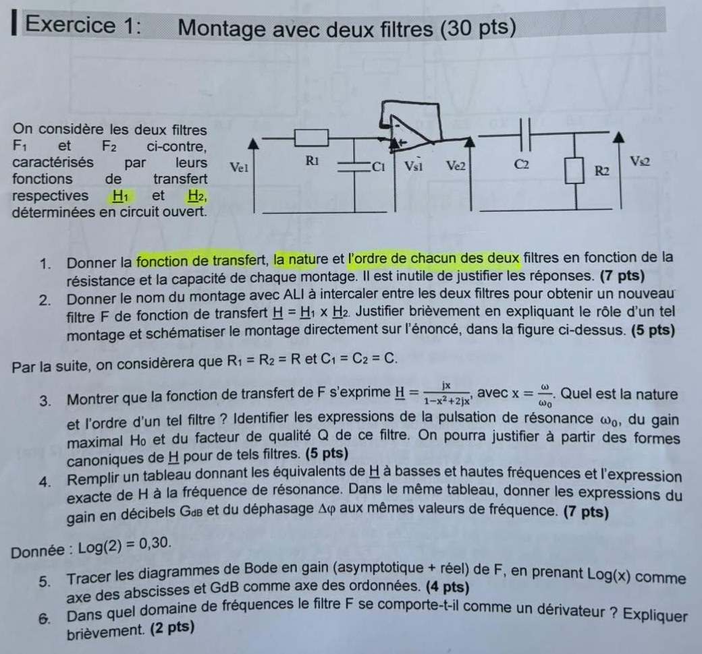
Question 1 (7 pts) — Fonction de transfert, nature et ordre de F₁ et F₂
Cadre. Régime sinusoïdal forcé, notation complexe, filtres « en circuit ouvert » (aucun courant de sortie). On note \(\underline H_k=\underline V_{sk}/\underline V_{ek}\).
F₁ (R₁ en série, C₁ vers la masse, sortie aux bornes de C₁). Pont diviseur de tension :
\[ \underline H_1=\frac{\dfrac1{jC_1\omega}}{R_1+\dfrac1{jC_1\omega}}=\boxed{\frac{1}{1+jR_1C_1\omega}} \]Nature : passe-bas (BF : \(\underline H_1\to1\) ; HF : \(\underline H_1\to0\)). Ordre : 1 (un seul condensateur ⇒ dénominateur de degré 1 en \(j\omega\)). Pulsation de coupure \(\omega_{c1}=1/(R_1C_1)\).
F₂ (C₂ en série, R₂ vers la masse, sortie aux bornes de R₂). Pont diviseur :
\[ \underline H_2=\frac{R_2}{R_2+\dfrac1{jC_2\omega}}=\boxed{\frac{jR_2C_2\omega}{1+jR_2C_2\omega}} \]Nature : passe-haut (BF : \(\underline H_2\to0\) ; HF : \(\underline H_2\to1\)). Ordre : 1. Pulsation de coupure \(\omega_{c2}=1/(R_2C_2)\).
Question 2 (5 pts) — Montage à intercaler entre F₁ et F₂
Justification du rôle. Le suiveur a une impédance d'entrée infinie (aucun courant n'est prélevé sur F₁, qui reste « en circuit ouvert ») et une impédance de sortie nulle (il impose \(V_{e2}\) quelle que soit la charge F₂). Sans lui, F₂ chargerait F₁ (elle absorberait du courant) et la fonction de transfert de la cascade ne serait pas le produit \(\underline H_1\times\underline H_2\). Avec lui, les deux filtres sont découplés et \(\underline H=\underline H_1\underline H_2\) exactement.
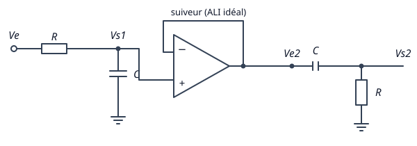
Question 3 (5 pts) — \(R_1=R_2=R\), \(C_1=C_2=C\) : forme de \(\underline H\), nature, ordre, \(\omega_0\), \(H_0\), \(Q\)
On pose \(x=\omega/\omega_0\) avec \(\omega_0=1/(RC)\), donc \(RC\omega=x\).
\[ \underline H=\underline H_1\,\underline H_2=\frac1{1+jx}\cdot\frac{jx}{1+jx}=\frac{jx}{(1+jx)^2} \]On développe le dénominateur : \((1+jx)^2=1+2jx+j^2x^2=1-x^2+2jx\). Donc
\[ \boxed{\ \underline H=\frac{jx}{1-x^2+2jx}\ } \]Nature et ordre. Le degré du dénominateur en \(j x\) est 2 : filtre d'ordre 2. Il est passe-bas (F₁) × passe-haut (F₂) : passe-bande (nul en BF et en HF, voir Q4).
Forme canonique du passe-bande d'ordre 2 : \(\underline H=\dfrac{H_0}{1+jQ\left(x-\dfrac1x\right)}\), ou, en multipliant haut et bas par \(jx/Q\) :
\[ \underline H=H_0\,\frac{j\,x/Q}{1-x^2+j\,x/Q} \]Identification avec \(\dfrac{jx}{1-x^2+2jx}\) :
- dénominateur : \(\dfrac1Q=2\) ⇒ \(Q=\dfrac12\) ;
- numérateur : \(H_0\,\dfrac xQ=2H_0\,x=x\) ⇒ \(H_0=\dfrac12\).
Question 4 (7 pts) — Tableau BF / HF / résonance
- BF (\(x\ll1\)) : \(\underline H\approx jx\) ; \(G_{dB}=20\log x\) (pente \(+20\) dB/déc) ; \(\Delta\varphi=+90^\circ\).
- HF (\(x\gg1\)) : \(\underline H\approx\dfrac{jx}{(jx)^2}=\dfrac1{jx}=-\dfrac jx\) ; \(G_{dB}=-20\log x\) (pente \(-20\) dB/déc) ; \(\Delta\varphi=-90^\circ\).
- Résonance (\(x=1\)) : \(\underline H(1)=\dfrac{j}{1-1+2j}=\dfrac12\) (exact) ; \(G_{dB}=20\log\dfrac12=-20\log2=-20\times0{,}30=-6\ \text{dB}\) ; \(\Delta\varphi=0\).
| BF \(x\ll1\) | Résonance \(x=1\) | HF \(x\gg1\) | |
|---|---|---|---|
| \(\underline H\) | \(jx\) | \(\dfrac12\) | \(-\dfrac jx\) |
| \(G_{dB}\) | \(20\log x\) | \(-6\ \text{dB}\) | \(-20\log x\) |
| \(\Delta\varphi\) | \(+90^\circ\) | \(0^\circ\) | \(-90^\circ\) |
Question 5 (4 pts) — Diagramme de Bode en gain
Abscisse \(\log x\), ordonnée \(G_{dB}\). Les deux asymptotes (\(+20\) dB/déc puis \(-20\) dB/déc) se coupent en \(x=1\) à \(0\) dB. La courbe réelle est 6 dB en dessous en \(x=1\) (\(G=20\log\dfrac{x}{1+x^2}\)).
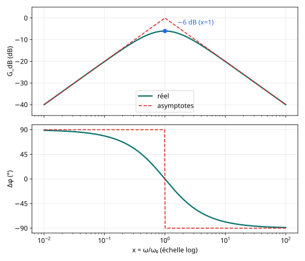
Question 6 (2 pts) — Domaine où F se comporte en dérivateur
Multiplier par \(j\omega\) revient à dériver en temporel : pente \(+20\) dB/déc et déphasage \(+90^\circ\), signature du dérivateur. Attention : ce n'est vrai que tant que \(x\ll1\), le gain restant alors très faible (\(|H|\approx x\)).
Exercice 2 — Différents filtrages d'un même signal · 24 pts
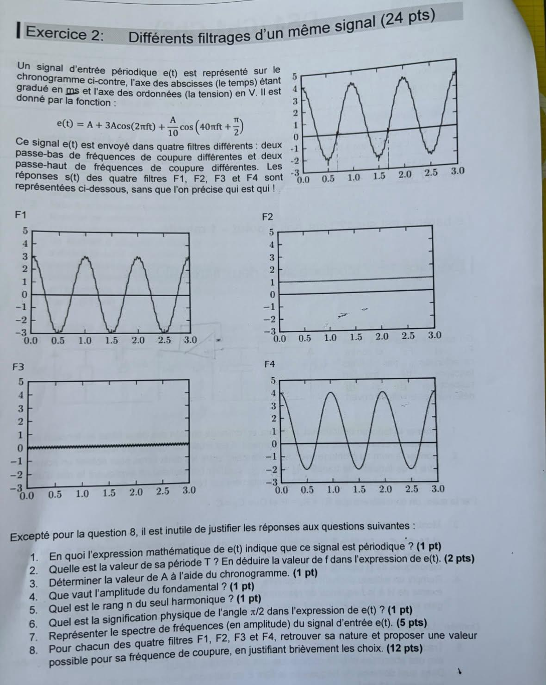
Question 1 (1 pt) — Pourquoi \(e(t)\) est-il périodique ?
Question 2 (2 pts) — Période \(T\) et fréquence \(f\)
Sur le chronogramme, deux oscillations complètes de grande amplitude apparaissent sur l'intervalle \([0\,;3]\) ms avec des maxima en \(t\approx1{,}0\) ms et \(t\approx2{,}0\) ms : la période est l'écart entre deux maxima (ou entre les deux traits pointillés verticaux, espacés d'environ 1 ms).
Question 3 (1 pt) — Valeur de \(A\)
\(A\) est la valeur moyenne de \(e(t)\) (les termes en cosinus sont de moyenne nulle). Le signal oscille entre \(\approx-2\) V et \(\approx+4\) V : la moyenne est \(\dfrac{4+(-2)}2=1\) V (c'est aussi la valeur lue sur la sortie F2, qui ne garde que la composante continue).
Question 4 (1 pt) — Amplitude du fondamental
Question 5 (1 pt) — Rang du seul harmonique
\(40\pi ft=2\pi\,(20f)\,t\) : fréquence \(20f=20\) kHz.
Question 6 (1 pt) — Signification de \(\pi/2\)
Question 7 (5 pts) — Spectre en amplitude de \(e(t)\)
Trois raies : \(0\) Hz (composante continue, \(A=1\) V), \(f=1\) kHz (\(3A=3\) V), \(20f=20\) kHz (\(A/10=0{,}1\) V).
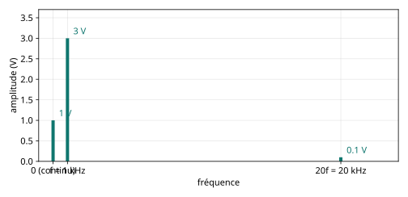
Question 8 (12 pts) — Nature et fréquence de coupure de F1, F2, F3, F4
Méthode. On regarde quelles raies du spectre survivent dans chaque sortie : continu (1 V), fondamental (3 V, 1 kHz), harmonique 20 (0,1 V, 20 kHz). Deux passe-bas et deux passe-haut au total.
| Filtre | Ce qui reste dans la sortie | Nature | \(f_c\) possible |
|---|---|---|---|
| F1 | Sinusoïde de 3 V à 1 kHz centrée sur 0 (continu supprimé), petit ressaut de l'harmonique visible | Passe-haut | \(0 |
| F2 | Seulement une constante ≈ 1 V : fondamental et harmonique éliminés | Passe-bas | \(f_c\ll1\) kHz : par ex. \(f_c\approx10\) Hz (ou moins) |
| F3 | Seulement une petite oscillation de 0,1 V à 20 kHz centrée sur 0 : continu et fondamental éliminés, harmonique conservé | Passe-haut | \(1\ \text{kHz}\ll f_c<20\) kHz : par ex. \(f_c\approx8\) kHz (filtre de pente suffisante) |
| F4 | Continu (1 V) + fondamental (3 V) lisses, sans ondulation à 20 kHz | Passe-bas | \(1\ \text{kHz} |
Justifications.
- F1 : la valeur moyenne est devenue nulle (axe 0 au centre) alors que l'amplitude 3 V du fondamental est conservée : il faut \(|H(0)|=0\) et \(|H(1\,\text{kHz})|\approx1\), donc passe-haut avec \(f_c\) nettement inférieure à 1 kHz.
- F2 : un passe-bas qui ne laisse que le continu doit avoir \(f_c\) très inférieure à 1 kHz (de l'ordre de \(f/30\) ou moins pour que les 3 V du fondamental soient réduits à une ondulation invisible).
- F3 : on ne voit que l'ondulation rapide de 0,1 V : le fondamental de 3 V doit être atténué d'un facteur \(\gtrsim30\) alors que l'harmonique 20 passe. Cela impose \(f_c\) entre les deux (ordre de quelques kHz à 10 kHz) et un filtre d'ordre \(\ge2\) pour une atténuation suffisante.
- F4 : le continu et le fondamental passent (\(f_c>1\) kHz) mais l'harmonique de 0,1 V est rabotée (\(f_c<20\) kHz) ; avec \(f_c=5\) kHz d'ordre 1, \(|H(20\,\text{kHz})|\approx0{,}24\) donc l'ondulation résiduelle vaut \(\approx0{,}02\) V, invisible sur le tracé.
Exercice 3 — Étude de la stabilité d'un montage · 20 pts
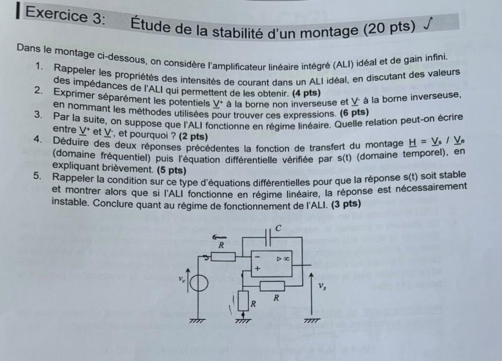
Lecture du schéma. Source \(v_e\) → résistance \(R\) → borne \(-\) ; condensateur \(C\) entre la borne \(-\) et la sortie \(v_s\) ; borne \(+\) reliée à la masse par une résistance \(R\) et à la sortie par une résistance \(R\).
Question 1 (4 pts) — Courants d'entrée de l'ALI idéal
Cela vient de l'impédance d'entrée infinie \(Z_e\to\infty\) : le courant d'entrée vaut \((V^+-V^-)\) ou \(V\) divisé par \(Z_e\), donc nul pour des tensions finies. Au contraire, l'impédance de sortie est nulle (\(Z_s\to0\)) : la sortie se comporte comme une source de tension idéale et peut débiter un courant \(i_s\) non nul (fourni par l'alimentation), qui n'est pas contraint.
Question 2 (6 pts) — Potentiels \(V^+\) et \(V^-\)
\(V^+\) — pont diviseur de tension. Comme \(i^+=0\), les deux résistances \(R\) sont traversées par le même courant (de \(v_s\) vers la masse) :
\[ V^+=\frac{R}{R+R}\,v_s=\boxed{\frac{v_s}{2}} \]\(V^-\) — théorème de Millman (loi des nœuds en termes de potentiels). Au nœud relié à la borne \(-\) : branche \(R\) vers \(v_e\), branche \(C\) (admittance \(jC\omega\)) vers \(v_s\), branche vers la masse (aucune car \(i^-=0\)). Loi des nœuds : \(\dfrac{\underline v_e-\underline V^-}{R}+jC\omega\,(\underline v_s-\underline V^-)=0\), donc
\[ \underline V^-=\frac{\dfrac{\underline v_e}{R}+jC\omega\,\underline v_s}{\dfrac1R+jC\omega}=\boxed{\frac{\underline v_e+jRC\omega\,\underline v_s}{1+jRC\omega}} \]Question 3 (2 pts) — Relation entre \(V^+\) et \(V^-\) en régime linéaire
Pour un ALI idéal de gain infini en régime linéaire, \(v_s=A_d\,\varepsilon\) est fini et \(A_d\to\infty\), donc nécessairement \(\varepsilon\to0\).
Question 4 (5 pts) — Fonction de transfert et équation différentielle
On écrit \(V^+=V^-\) :
\[ \frac{\underline v_s}{2}=\frac{\underline v_e+jRC\omega\,\underline v_s}{1+jRC\omega} \ \Longrightarrow\ \underline v_s(1+jRC\omega)=2\underline v_e+2jRC\omega\,\underline v_s \] \[ \underline v_s\,(1+jRC\omega-2jRC\omega)=2\underline v_e \ \Longrightarrow\ \boxed{\ \underline H=\frac{\underline v_s}{\underline v_e}=\frac{2}{1-jRC\omega}\ } \]Équation différentielle. On revient au produit en croix \(\underline v_s\,(1-jRC\omega)=2\underline v_e\) et on remplace \(j\omega\) par \(d/dt\) :
\[ \boxed{\ v_s-RC\,\frac{dv_s}{dt}=2v_e\ } \quad\text{soit}\quad RC\,\frac{dv_s}{dt}-v_s=-2v_e \]Question 5 (3 pts) — Condition de stabilité et conclusion
Condition. Une équation différentielle linéaire du premier ordre \(a_1\,\dot s+a_0\,s=b\,e\) a une solution homogène \(s_h(t)=K\,e^{-(a_0/a_1)t}\). Elle tend vers 0 (réponse stable) si et seulement si \(a_0/a_1>0\) : les coefficients \(a_1\) et \(a_0\) doivent être de même signe.
Ici : \(a_1=RC>0\) et \(a_0=-1<0\) : signes opposés. La solution homogène est \(s_h(t)=K\,e^{+t/(RC)}\), qui diverge exponentiellement : la réponse est instable.
Exercice 4 — Montage avec deux ALI · 18 pts
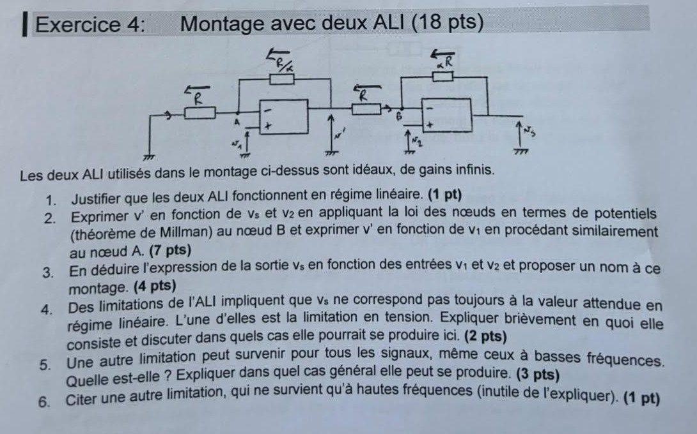
Lecture du schéma. Étage 1 : \(v_1\) sur la borne \(+\) ; la borne \(-\) (nœud A) est reliée à la masse par \(R\) et à la sortie \(v'\) par \(R/\alpha\). Étage 2 : \(v_2\) sur la borne \(+\) ; la borne \(-\) (nœud B) est reliée à \(v'\) par \(R\) et à la sortie \(v_s\) par \(\alpha R\).
Question 1 (1 pt) — Régime linéaire
Question 2 (7 pts) — \(v'\) en fonction de \(v_s\), \(v_2\), puis de \(v_1\)
Nœud B (Millman, courant d'entrée nul). Admittances : \(1/R\) vers \(v'\), \(1/(\alpha R)\) vers \(v_s\) :
\[ V_B=\frac{\dfrac{v'}{R}+\dfrac{v_s}{\alpha R}}{\dfrac1R+\dfrac1{\alpha R}}=\frac{\alpha v'+v_s}{\alpha+1} \]Régime linéaire : \(V_B=V^+=v_2\), donc \((\alpha+1)v_2=\alpha v'+v_s\) :
\[ \boxed{\ v'=\frac{(1+\alpha)\,v_2-v_s}{\alpha}\ } \]Nœud A (Millman). Admittances : \(1/R\) vers la masse (potentiel 0), \(\alpha/R\) vers \(v'\) (car la résistance vaut \(R/\alpha\)) :
\[ V_A=\frac{\dfrac{0}{R}+\dfrac{\alpha}{R}v'}{\dfrac1R+\dfrac{\alpha}{R}}=\frac{\alpha}{1+\alpha}\,v' \]Régime linéaire : \(V_A=v_1\), donc
\[ \boxed{\ v'=\frac{1+\alpha}{\alpha}\,v_1\ } \](C'est bien le gain \(1+\dfrac{R/\alpha}{R}=\dfrac{1+\alpha}{\alpha}\) d'un amplificateur non inverseur.)
Question 3 (4 pts) — Expression de \(v_s\) et nom du montage
On égale les deux expressions de \(v'\) :
\[ \frac{(1+\alpha)v_2-v_s}{\alpha}=\frac{1+\alpha}{\alpha}v_1 \ \Longrightarrow\ (1+\alpha)v_2-v_s=(1+\alpha)v_1 \] \[ \boxed{\ v_s=(1+\alpha)\,(v_2-v_1)\ } \]Question 4 (2 pts) — Limitation en tension (saturation)
La sortie d'un ALI réel ne peut pas dépasser les tensions d'alimentation : \(|v_{sortie}|\le V_{sat}\approx V_{CC}\) (typiquement \(15\) V). Si la valeur « attendue » calculée en régime linéaire dépasse \(V_{sat}\), la sortie reste bloquée à \(\pm V_{sat}\) et l'ALI quitte le régime linéaire.
Question 5 (3 pts) — Autre limitation valable aux basses fréquences
Elle se produit si la charge (ou le circuit extérieur) demande un courant supérieur à \(i_{s,max}\), c'est-à-dire pour une charge de trop faible résistance : \(R_{charge} Question 6 (1 pt) — Limitation des hautes fréquences
Exercice 5 — Comparateurs en séance de TP · 28 pts
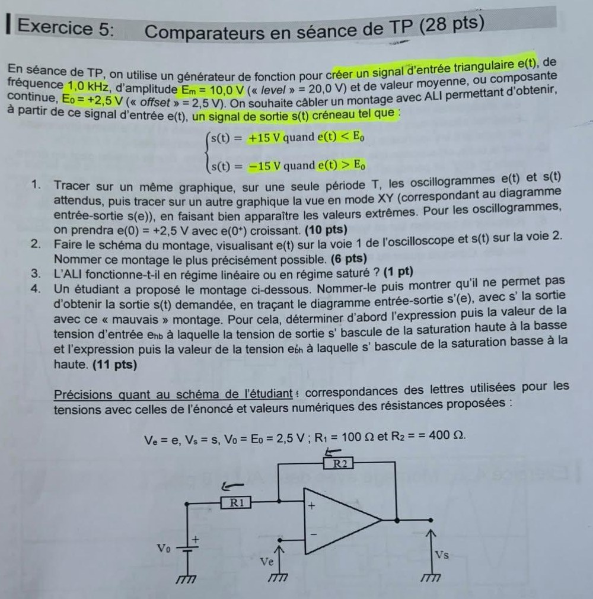
Données. \(e(t)\) triangulaire, \(f=1{,}0\) kHz (\(T=1{,}0\) ms), amplitude \(E_m=10{,}0\) V, moyenne \(E_0=2{,}5\) V, donc \(e\in[-7{,}5\ ;\ +12{,}5]\) V. Sortie voulue : \(s=+15\) V si \(e
Question 1 (10 pts) — Oscillogrammes sur une période et diagramme XY
Triangle. Pente \(\pm\dfrac{10\ \text{V}}{T/4}=\pm40\ \text{V/ms}\). Dates clés : \(e(0)=2{,}5\) V, \(e(T/4)=12{,}5\) V (maximum), \(e(T/2)=2{,}5\) V, \(e(3T/4)=-7{,}5\) V (minimum), \(e(T)=2{,}5\) V.
Sortie. Sur \(]0\,;T/2[\) : \(e>E_0\) ⇒ \(s=-15\) V. Sur \(]T/2\,;T[\) : \(e 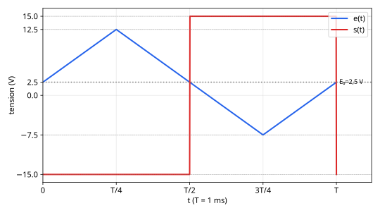 Diagramme entrée-sortie (mode XY, \(s\) en fonction de \(e\)) : deux paliers horizontaux \(s=+15\) V pour \(e<2{,}5\) V et \(s=-15\) V pour \(e>2{,}5\) V, reliés par un segment vertical en \(e=E_0=2{,}5\) V (un seul seuil, aucune hystérésis). 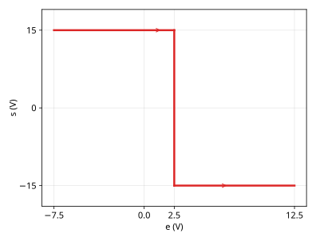 Question 2 (6 pts) — Schéma du montage et nom \(s=+V_{sat}\) quand \(V^+>V^-\). On veut \(s=+15\) V quand \(e 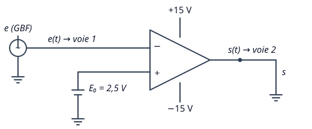 Question 3 (1 pt) — Régime de l'ALI Question 4 (11 pts) — Montage de l'étudiant Lecture du schéma. \(e\) sur la borne \(-\) ; la borne \(+\) est reliée au point commun de \(R_1\) (côté \(V_0=E_0\)) et de \(R_2\) (côté sortie \(s'\)). Il y a une réaction sur la borne \(+\) (positive) : le régime est saturé. Potentiel de la borne \(+\) (Millman, \(i^+=0\)) : La sortie bascule quand \(V^+=V^-\), la valeur de \(V^+\) dépendant de l'état de \(s'\). Bascule haut → bas. Avant le basculement, \(s'=+V_{sat}=+15\) V (tant que \(e Bascule bas → haut. Avant, \(s'=-V_{sat}=-15\) V. Le basculement a lieu quand \(e\) diminue jusqu'à \(V^+\) : 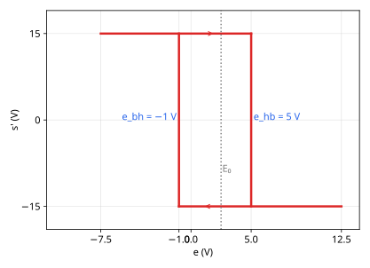 Pourquoi ça ne convient pas. Sur le triangle : \(s'\) passe à \(-15\) V quand \(e\) atteint 5 V en montée (\(t\approx0{,}06\) ms) et repasse à \(+15\) V quand \(e\) atteint \(-1\) V en descente (\(t\approx0{,}59\) ms), au lieu de \(0\) et \(0{,}5\) ms : la sortie est décalée et déformée par rapport à \(s(t)\) voulue. 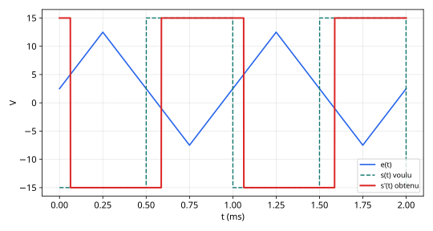